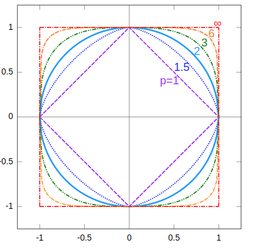

范数正则化的原理分析（一）：贝叶斯学派角度
范数正则化是机器学习和深度学习中最常用的正则化手段，本文讲述从贝叶斯角度理解范数正则化，另外还提供信息论上的解释。$L_1$、$L_2$正则化都是解决模型过拟合的方法，它们有什么数学上的解释呢？
正则化是一种修正学习算法的数学技巧，目的是降低模型的范化误差。通常的做法是在目标函数上添加一个学习惩罚项，比如范数。此外还有的做法是干扰优化过程，如训练过程中提前停止，不过这些方法在深度学习中才常见。
Lp范数
Lp范数的定义，
这里$p \ge 1$。当$p \rightarrow \infty$时，有
这个比较容易证明。假设$|x_{1}|,|x_{2}|,\dots,|x_{n}|$中，$|x|_j$最大，那么有，
类似地，
因此有，
当$p$很大的情况下，$n^{\frac{1}{p}}$接近1。因此，
我们可视化一下不同p取值时的$L_p$，

极大似然估计与最小二乘法
假设噪声独立同分布，
由于回归模型有噪声的存在，
那么回归模型可以用概率模型表示，
对于样本$(\boldsymbol{x}_{i}, y_{i})$可以用概率模型表示，
那么似然函数有，
两边取对数，
为让上式极大化，形式上等价于下式的最小化，
也就是说，以均方误差最小化（MLE）的学习策略的机器学习算法与极大似然估计的参数估计方法在数学计算上是等价的。
在学习问题上，MLE有一个严重的问题，当模型参数远大于样本数量$n$时，会出现严重的过拟合，导致模型无法学习优化。为此需要引入一定的约束。
贝叶斯学派与最大后验估计
以上的讨论让我们意识到频率学派的最大似然估计（MLE）对参数的基本假设是，参数是一个未知但固定的常数。贝叶斯学派的最大后验估计（MAPE）则认为，参数并不是一个固定的常数，而是一个未知的随机变量，服从一个概率分布，称为先验分布。有概率分布$f(x, \theta)$，从该分布中采样$n$个样本$x_{1}, \dots, x_{n}$。这里假设参数$\theta$的先验分布为$h(\theta)$，那么根据贝叶斯公式，参数$\theta$的后验分布为，
这里，
考虑到参数$\theta$的后验分布是一个函数，那么实际使用中，需要$\theta$的具体值，那么后验分布的均值或众数也可以，这个使用的选择性比较灵活。例如，后验分布的众数可以表示为，
这里后验分布的分母与$\theta$无关，所有可以去掉。这里也可以看到，当$h(\theta) = \text{const}$时，极大似然估计等价于最大后验估计。换句话说，极大似然估计等价于先验分布为均匀分布的最大后验估计。
$L_{2}$ 正则化与高斯分布
假设参数 $\boldsymbol{w}$ 服从正态分布，
其中参数$\theta=(0,\lambda^{2})$。因为我们假定模型是无偏的。
已知观察样本 $(\boldsymbol{x}_{i}, y_{i}),i=1, \dots,n$，使用最大后验估计（MAPE），有似然函数$L(\boldsymbol{w}) $，
两边取对数，
为让上式极大化，形式上等价于下式的最小化，
也就是说Ridge regression，即引入$L_2$范数正则化的模型，相当于假设参数的先验分布为正态分布。根据正态分布的性质，$L_2$范数正则化的引入并不能让模型产生稀疏解。
简而言之，$L_2$正则化等价于参数服从高斯先验，其并不具有稀疏解的特性。
$L_{1}$ 正则化与拉普拉斯分布
类似以上方法，假设模型的参数$\boldsymbol{w}$为随机变量，其先验分布为拉普拉斯分布，
通常模型是无偏的，于是$\mu=0$，参数先验分布为，
已知观察样本 $(\boldsymbol{x}_{i}, y_{i}),i=1, \dots,n$，使用最大后验估计（MAPE），有似然函数$L(\boldsymbol{w}) $，
两边取对数，
为让上式极大化，形式上等价于下式的最小化，
也就是说Lasso regression ，即引入$L_1$范数正则化的模型，相当于假设参数的先验分布为拉普拉斯分布。根据拉普拉斯分布的特点，模型参数会高概率地取0，于是就产生模型参数的稀疏性。从特征工程角度看，$L_1$正则化相当于给模型内嵌一个特征选择器。
简而言之，$L_1$正则化等价于参数服从拉普拉斯先验，使得模型其并具有稀疏解的特性。
由于$L_{1}$正则化在零点不可微，
Elastic Net
一个比较自然的想法是结合$L_1$和$L_2$正则化，即Elastic Net，
推广到 $L_{p}$ 正则化
注意到分母是$\Gamma(x)$函数，
也就是说，对于一个 $L_{p}$ 正则化约束，相当于参数先验分布为 $f(x;\beta)=\frac{\beta e^{-|x|^{\beta}}}{2\Gamma(\frac{1}{\beta})}$，这个分布称为广义正态分布，其一般形式有，
其中$\Gamma(x)$值伽马函数，$\beta$是形状参数，$\alpha$是尺度参数，$\mu$是位置参数。
结论
模型引入正则化，相当于给模型参数约定了一个取值空间，如$L_1, L_2, \dots L_p$，换成贝叶斯概率的语言来说就是给参数设定先验分布。
对于炼丹来说，正则化是一种优化手段，并不是必备的东西，也不能保证用上了就一定有效，只不过是多了一种选择，最后行不行还是取决于具体的实验。
转载请包括本文地址：https://allenwind.github.io/blog/7575
更多文章请参考：https://allenwind.github.io/blog/archives/